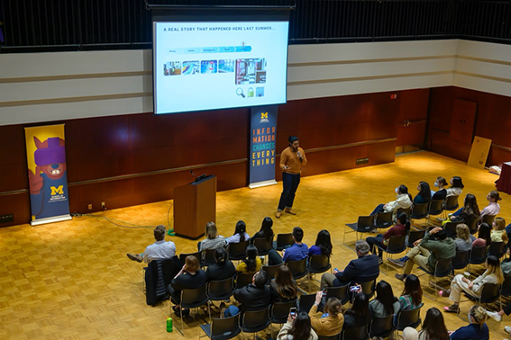

Plan responsible project transition
Exiting a Community-Engaged Project WorksheetGuided template for responsible project transition, asset delivery, and offboarding.
Close your project responsibly, evaluate your outcomes, and articulate your real-world experience for your future career.
A project is not complete simply because the final deliverable has been handed over. The final stages—closing, reflecting, and translating—are what transform a transient project into lasting organizational value and personal career momentum.
Responsible handoffs ensure that partners are not left with abandoned tools or undocumented systems they cannot maintain. Simultaneously, structured reflection forces you to pause and ask: What did I learn about my technical skills, my teamwork style, and the ethical impact of my work? Without reflection, experience is just something that happened to you; with reflection, experience becomes expertise. Learning to translate complex, messy project narratives into clear resume bullets and portfolio case studies is what turns your UMSI education into your greatest professional asset.
Explore the tracks below
Responsible offboarding is an ethical mandate in engaged learning. Delivering high-quality technical assets is only half the job—ensuring the community partner or client can independently maintain, update, and benefit from your work long after the semester ends is what defines a successful project.

Guided template for responsible project transition, asset delivery, and offboarding.
Re-evaluate final deliverables against original project commitments.
Best practices for respectful closure with community organizations.
Employers do not just hire technical skills—they hire people who can solve unscripted problems, collaborate in diverse teams, and deliver results under realistic constraints. This track guides you in bridging the gap between your academic work and your professional brand, helping you articulate the full narrative of your growth.

Student presenting their work to a group of people
Step-by-step guide to translating client/course projects into high-impact resume experience.
Best practices for sharing project milestones, tagging partners, and showcasing work publicly on LinkedIn.
Template to help you prep interview stories around teamwork, conflict, and technical problem-solving.